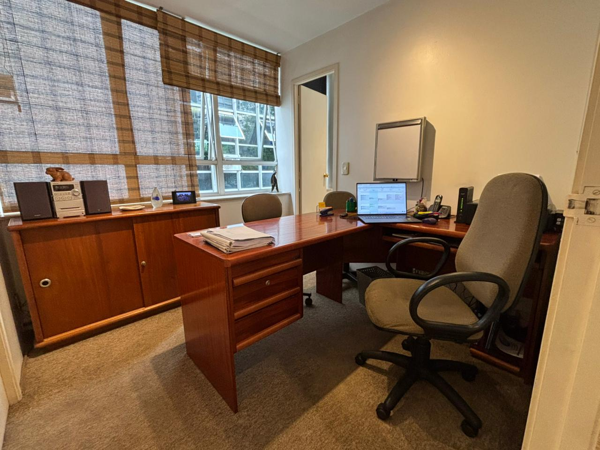

O consultório do Dr. Adriano Caló oferece um atendimento humanizado e de alta qualidade, focado em tecnologia avançada e respeito às necessidades de cada paciente. Agende sua consulta e redescubra o prazer de sorrir.
O consultório é dotado dos mais modernos equipamentos, que possibilitam um controle total e rigoroso dos atuais conceitos de biossegurança: impedir transmissão de doenças inter-pacientes é uma preocupação constante e todos os meios físicos e químicos mais eficazes são adotados visando a proteção destes.
Efetuamos uma rigorosa seleção de cada material empregado na clínica, o que possibilita a obtenção de trabalhos mais duradouros e com um nível de qualidade indiscutível. Os materiais empregados são adquiridos apenas de empresas de alto conceito, que seguem normas de conservação e transporte que não coloquem a qualidade em risco. Os trabalhos de prótese são executados por laboratório de inquestionável conceito, que adota os processos mais modernos e sofisticados. Os centros radiológicos aos quais são encaminhados nossos pacientes, possuem equipamentos “hi-tech” como ressonância magnética e tomografia helicoidal computadorizada e volumétrica em Alta Definição, o que nos possibilita diagnósticos muito mais precisos e seguros. O laboratório de anatomia patológica para o qual são enviados os materiais colhidos dos pacientes para análises patológicas é, sem dúvida, o melhor do país. Tudo isto resulta num tratamento muito mais seguro, confortável, rápido e eficaz aos pacientes.
Este tipo de faceta é indicado quando há manchas, problemas de cor, dentes tortos ou separados. É um procedimento de baixo custo, rápido e com resultados surpreendentes.
Quando as facetas de Resina não são suficientes para corrigir os problemas estéticos, confeccionam-se as facetas de porcelana.

Quando um ou mais dentes são perdidos, pode-se recorrer à colocação de parafusos de titânio diretamente no osso e próteses são colocadas sobre estes parafusos. Realizamos, quando indicadas, as técnicas de "Carga Imediata", "Sinus Lift", "All on Four", dentre outras .
Em certos casos, existem espaços grandes demais entre dois dentes (diastemas) o que pode prejudicar significativamente a estética. Com simples restaurações de Resina, estes espaços podem ser fechados.
O clareamento dos dentes é uma das técnicas estéticas mais usadas na atualidade. É feito com feixes de LED (Clareamento em consultório) ou pela técnica doméstica.
Indicadas para dentes portadores de grandes destruições. Podem possuir pinos fixados às raízes remanescentes, podendo ser feitas de diversos materiais (cerâmica, cerômeros, Resinas especiais, E-Max, metal, etc.)
As restaurações de dentes cariados ou quebrados são feitas com resina fotopolimerizável. Sua durabilidade, resistência e estética são excelentes. Em nosso consultório usamos o fotopolimerizador de 1.200mW/cm² - Isto significa que as restaurações têm mais qualidade, estética e durabilidade.
Consiste na colagem de pedaços de dentes quebrados. Bastante comum em acidentes durante atividades esportivas, principalmente em crianças e adolescentes. Os fragmentos quebrados requerem alguns cuidados no armazenamento.
É a associação da aplicação de feixes de Raios Laser e corantes. Esta técnica, quando aplicada em cáries profundas, mata os microrganismos sem lesar as células da polpa evitando tratamentos de canais.
Equipamentos para obter fotografias e filmes dos tecidos bucais e do rosto dos pacientes, inclusive com grandes aumentos, que ajudam no diagnóstico, planejamento e na execução dos tratamentos.
Quando um ou mais dentes são perdidos, estes podem ser substituídos por próteses fixas cimentadas aos dentes remanescentes vizinhos, que necessitam de desgastes.
Indicada para pacientes que perderam todos os dentes de uma ou das duas arcadas e que por algum motivo não desejam se submeter aos implantes.
Bruxismo é o hábito de ranger ou apertar os dentes. Esta condição, além de poder fraturar e lascar dentes, muitas vezes leva a grandes destruições ósseas.

A Odontologia tira grande proveito de técnicas radiológicas sofisticadas como as tomografias computadorizadas volumétricas, helicoidais e ressonâncias magnéticas. Trabalhamos com centro radiológico de referência no País.

Aplicações, de Raios LASER, Cirurgias, Tratamentos Periodontais com Ultra-som, Simulações de tratamentos em microcomputadores, e Caracterização dental para atores
Não sabendo que era impossível, ele foi lá e fez

Segunda a Sexta: 08:30 às 13:00
E das 14:30 às 19:00 hs